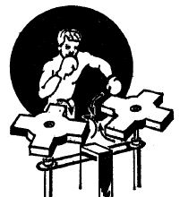
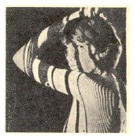
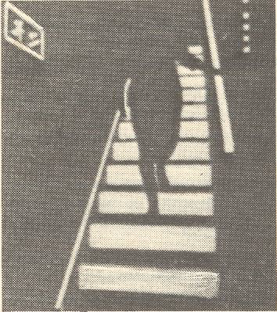
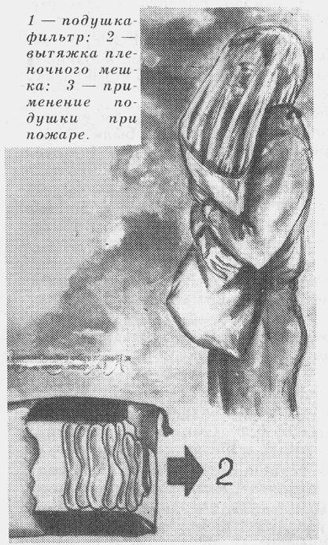
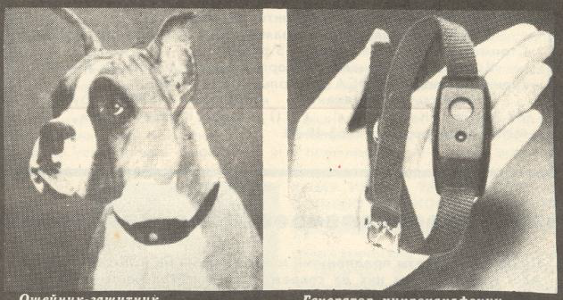

PHỤ LỤC
PHỤ LỤC cung cấp thêm cho bạn đọc các thí dụ lấy từ các lĩnh vực khác nhau (Phụ lục 1), các chuyện vui (Phụ lục 2) và các tranh vui (Phụ lục 3). Chúng được người viết sưu tầm, chủ yếu, từ các tạp chí tiếng Nga “Kỹ thuật và khoa học”, “Tạp chí của các kỹ sư”, “Nhà sáng chế và hợp lý hóa”, “Kỹ thuật và thanh niên”, “Nhà kỹ thuật trẻ”, “Nhà thiết kế và tạo mẫu”, “Khoa học và đời sống” và từ một số quyển sách có trong danh sách các tài liệu tham khảo chính ở cuối quyển sách này.
Bạn có thể đọc các thí dụ, chuyện vui, tranh vui để biết, như vẫn thường đọc những cái tương tự đăng trong báo chí các loại. Tuy vậy, người viết khuyên bạn không nên dừng lại ở đó. Bạn nên quy chúng về các thủ thuật, như người viết đã làm trong phần CÁC THÍ DỤ của mỗi mục nhỏ thuộc mục 11.2 Lời phát biểu, các thí dụ minh họa và một số nhận xét về các thủ thuật (nguyên tắc) sáng tạo cơ bản; CHUYỆN VUI, TRANH VUI của mỗi mục nhỏ thuộc mục 11.3 Các ích lợi của các thủ thuật (nguyên tắc) sáng tạo cơ bản nhìn dưới góc độ các kiến thức cơ sở của PPLSTVĐM của quyển bốn.
Các chuyện vui, tranh vui trước hết đem lại sự vui vẻ, thư dãn cho bạn đọc. Sau đó, bạn thử xem trong chuyện vui, tranh vui đó có thủ thuật gì? Người ta đã dùng thủ thuật ra ngoài phạm vi áp dụng như thế nào? Nếu tưởng tượng tiếp, ý tưởng có trong chuyện vui, tranh vui có thể sẽ được dùng ở đâu thì đem lại ích lợi?…
Riêng đối với từng thí dụ của Phụ lục 1, bạn nên áp dụng thêm cả “Chương trình lý giải lôgích” (xem mục nhỏ 12.1.4 Chương trình phát hiện các thủ thuật và làm tái hiện quá trình suy nghĩ lôgích để có được hệ thống cải tiến cho trướccủa quyển sách này).
Tóm lại, bạn nên xem những gì trình bày trong PHỤ LỤC này như là các bài tập rèn luyện việc hiểu và sử dụng hệ thống các thủ thuật (nguyên tắc) sáng tạo cơ bản sau khi đã đọc (học) xong quyển bốn và quyển năm.
Nhân đây, nếu như bạn có thêm thói quen mới: Tập hợp, rồi phân tích, bình luận và phát triển các thí dụ, chuyện vui, tranh vui liên quan đến các thủ thuật nói riêng, PPLSTVĐM nói chung, mà bạn bắt gặp chúng trong khi đọc báo, tạp chí, sách các loại, thì thói quen đó sẽ đem lại cho bạn không ít các ích lợi.
Ngoài ra, còn có một cách luyện tập khác. Tùy theo điều kiện của bạn, bạn có thể chọn một đồ vật nào đó (phong bì, bưu ảnh, bút, bật lửa, đèn pin…) để sưu tầm từ những cái đã có từ lâu đến những cái mới xuất hiện. Sắp xếp chúng theo thứ tự thời gian ra đời, bạn sẽ theo dõi được sự tiến hóa, phát triển của đồ vật cụ thể đó. Không những thế, bạn còn lý giải nhờ những thủ thuật nào mà đồ vật đó tiến hóa, phát triển như vậy (xem Hình 218 và văn bản kèm theo thuộc mục nhỏ 12.1.4 Chương trình phát hiện các thủ thuật và làm tái hiện quá trình suy nghĩ lôgích để có được hệ thống cải tiến cho trước của quyển sách này). Cao hơn nữa, bạn hãy phát ý tưởng cải tiến tiếp. Chúc bạn thành công.
PHỤ LỤC 1: CÁC THÍ DỤ
1) Hầu như toàn bộ táo công ty A đặt mua đều bị sứt, bị trầy do mưa đá. Nếu đem bán rẻ chỗ táo này thì cũng chưa chắc bán được hết mà tiền lỗ sẽ rất lớn. Công ty A giải quyết vấn đề này như thế nào?
Công ty A cắm bảng quảng cáo trước cửa tiệm và đăng báo với nội dung quảng cáo như sau: “Hãy chú ý những quả táo bị trầy. Những vết trầy do mưa đá để lại. Nói cách khác, đây là loại táo được trồng trên vùng đất cao. Các bạn đều biết, ở vùng đất cao, nếu nhiệt độ hạ thấp đột ngột thì phát sinh mưa đá. Điều này lại làm cho thịt trái táo săn lại, táo trở nên cực kỳ ngon và hấp dẫn”.
Người nghĩ ra lối quảng cáo này không biết là ai nhưng nhờ anh ta mà công ty A thoát nạn. Về sau, công ty A lại mua rẻ thêm được một số táo trầy, bán xong được lời bộn.
2) Công ty M sản xuất nước sốt cà chua, mặc dù qui mô rất lớn nhưng sản phẩm bán không chạy, vì bị công ty K vốn có từ lâu đời, cạnh tranh. Nhãn hiệu “Nước sốt cà chua XX” của công ty K rất quen thuộc với người tiêu thụ.
Chẳng lẽ phải chịu thua mãi? Do đó, Ban giám đốc đã ra chỉ thị “số lượng sản phẩm tiêu thụ trong năm nay phải vượt qua công ty K”. Nhân viên của bộ phận “Nước sốt cà chua” suy nghĩ ngày đêm, đề ra các phương án dưới đây nhưng tất cả các phương án này đều không được sử dụng:
Công ty K bán sản phẩm chạy hơn công ty M vì có tiếng hơn, do đó phải tăng phí tổn quảng cáo sao cho “Nước sốt cà chua M” trở nên thật thân thuộc với đại chúng.
Công ty chúng ta qui mô lớn hơn hẳn công ty K, mạng lưới phân phối cũng rộng hơn. Lúc này nên mở chiến dịch “tiến công mạnh trên địa bàn bán lẻ”
Chất lượng luôn luôn đứng đầu. Nếu bán không chạy phải chăng do nước sốt cà chua của chúng ta không ngon bằng nước sốt cà chua của công ty K? không nên nói bất cứ sản phẩm nào của một công ty đã có uy tín đều bảo đảm. Vì vậy, bộ phận sản xuất phải làm việc nỗ lực để nâng cao chất lượng.
Phương án được chọn lại rất ly kỳ cổ quái. Chế tạo chai đựng nước sốt cà chua miệng to hơn, sao cho muỗng canh thọc được vào tới đáy chai. Ý kiến này phát sinh từ việc từ trước đến nay, nước sốt cà chua đựng trong chai, nếu không lắc mạnh thì rất khó đổ ra.
Kết quả là sản phẩm của công ty M mỗi năm bán chạy gấp 8 lần so với trước đây, ai nấy đều kinh ngạc.
Những phương án như đẩy mạnh quảng cáo, gia tăng bán lẻ, nâng cao chất lượng… đều không phải là sai nhưng chúng chỉ là những phương án bình thường trong kinh doanh và bạn đọc nên nhớ kỹ rằng: Nếu chúng ta chỉ làm những công việc bình thường thì chúng ta cũng chỉ đạt được những kết quả bình thường mà thôi.
3) Tình hình kinh tế nước Mỹ trong những năm 1930 rất đen tối. Cặp vợ chồng H vừa rời khỏi ghế nhà trường, đến miền Tây mở một cửa hàng bách hóa nhỏ tại một làng nhỏ. Vì làng quá nhỏ nên việc buôn bán phần lớn dựa vào hàng trăm chuyến xe mỗi ngày đi qua làng này để đến miền Viễn Tây. Nhưng khổ nỗi là các xe này, không xe nào chịu dừng lại cả. Nhưng cuối cùng vợ chồng H cũng nghĩ ra cách làm cho xe dừng lại. Bạn có biết họ làm cách nào không?
Vợ chồng H cắm vô số các bảng quảng cáo sau đây dọc hai bên đường:
“Nước lạnh miễn phí. Hỏi cửa hàng bách hóa OO làng X bang Nam Dakota”
Tại địa phương, uống nước miễn phí ở cửa hàng bách hóa là điều đương nhiên. Vì là điều đương nhiên nên từ trước đến nay không ai thèm quảng cáo cả. Chính điểm đặc biệt này đã khiến cho người đọc bảng quảng cáo dừng lại và ghé vào cửa hàng. Hai mươi năm sau, cửa tiệm của vợ chồng H có đến 30 người làm công và là một trong những cửa tiệm bách hóa lớn nhất bang Nam Dakota.
4) Một tiệm bán xe hơi sắp khai trương ở bang Missouri. Mặc dù có đăng quảng cáo trên báo chí nhưng vì kinh phí dành cho quảng cáo có hạn, kết quả thu được cũng không là bao nhiêu. Nhưng họ bắt buộc phải tìm ra cách làm cho báo giới chú ý. Bạn có biết họ làm cách nào không? Ở Mỹ xe cộ dư thừa, muốn cho báo viết bài về hãng thì dù có tặng không một, hai chiếc xe cũng không đi tới đâu.
Họ cho đăng trên mục quảng cáo “Nếu quí khách có con nhỏ thì cứ một mặt con bớt 10 đôla”. Trong số những khách hàng sau khi đọc quảng cáo tìm đến tiệm bán xe hơi nọ, có người dắt theo 11 đứa con. Ông ta đòi hãng xe tặng không một chiếc xe hơi cũ giá 100 đô-la.
Ông chủ tiệm than trời “Nếu 11 con thì bớt 110 đô-la. Giá xe chỉ có 100 đô. Làm sao bây giờ?”. Sau rốt, ông mới quyết định: “Hôm nay ăn mừng ngày khai trương, chúng tôi sẽ tặng bạn một chiếc xe hơi và 10 đô-la, ngoài ra lại đổ đầy xăng cho bạn”. Ông bố của 11 đứa con mặt mũi cực kỳ hân hoan. Lúc đó, phóng viên liền chụp ngay một kiểu ảnh. Đương nhiên là báo ngày hôm sau có đăng bài tường thuật.
Nếu nghĩ kỹ thì một chiếc xe cũ giá 100 đô-la đi không được bao lâu thì sẽ bỏ vào “kho”, tiền vốn rất thấp. Do đó món tiền tốn này không đến 1/10 phí tổn quảng cáo.
5) Một xe cam-nhông chở đầy vật dụng bằng sắt, lúc đi dưới gầm một cây cầu sắt thì va vào cầu. Khi đụng, xe đang chạy với tốc độ lớn nên xe bị kẹt cứng, tiến tới cũng không được mà lùi về cũng không xong. Sự tình rất nghiêm trọng vì các xe đi sau cũng bị kẹt theo, không đi tới được. Bao nhiêu người vắt óc ra nghĩ mà nghĩ vẫn không ra cách giải quyết thỏa đáng. Lúc đó, một thiếu niên đi ngang, tuyên bố “Giải quyết được”. Quả vậy, làm theo lời của em thì xe đi qua dễ dàng. Bạn có biết em thiếu niên đó làm thế nào không?
Xì bánh xe xẹp xuống thì vật dụng chở trên xe sẽ tách rời khỏi cầu. Kế tiếp rồ máy lái xe từ từ đi qua.
6) Trong những quảng cáo dưới đây, câu nào, theo bạn, đánh trúng tâm lý nhi đồng nhất? Bạn hãy xếp chúng theo thứ tự hiệu quả giảm dần.
Em bé chạy nhanh hơn thỏ.
Em bé chạy nhanh hơn đối thủ của mình.
Em bé chạy nhanh hơn âm thanh.
Em bé chạy nhanh hơn vận động viên huy chương vàng Thế vận hội.
Câu c) kích động trẻ em mạnh nhất: “Em bé chạy nhanh hơn âm thanh”. Tiếp đến là câu a), câu d), câu b).
Đa số trẻ em hiện nay đều ngưỡng mộ các superman hoặc những nhân vật “giỏi cực kỳ”. Do đó đối với các em, vận động viên huy chương vàng Thế vận hội thì làm sao các em bì kịp? Còn chạy thắng bạn cùng chạy với mình thì thật là một việc không đáng kể.
7) Thông thường, danh mục hàng hóa của xưởng sản xuất gửi đến cho cửa hàng bán lẻ chỉ gồm hình chụp món hàng kèm theo lời giải thích và giá tiền. Anh X nghĩ được cách cải tiến danh mục này, làm cho nó trở thành rất hấp dẫn. Bạn có biết anh đã sử dụng cách nào không?
Anh ta chú thích bên dưới mỗi mặt hàng số tiền lời mà cửa tiệm bán lẻ sẽ thu được và anh ta chú thích thật rõ ràng, thật dễ hiểu. Danh mục hàng hóa vừa đáng tin cậy vừa tiện lợi này rất được ưa chuộng ở Mỹ.
8) Công ty T chuyên chế tạo máy truyền thanh dành cho xe hơi, phải sử dụng rất nhiều dây cao su dài 7 cm, nên phải thuê hẳn mấy người chỉ chuyên việc cắt dây cao su.
Bạn có nghĩ ra phương pháp cắt dây cao su nào vừa đơn giản vừa một lần cắt được nhiều dây không?
Một nhân viên viên nghĩ ra phương pháp sau đây:
Dùng một bản gỗ có kích thước sao cho sợi dây cao su quấn vừa quanh nó sẽ có chiều dài 7 cm. Quấn nhiều vòng kề nhau. Tiếp theo, lấy thước đè chặt chỗ cần cắt. Cuối cùng, lấy dao cắt một nhát.
Nói nhỏ cho bạn biết: anh nhân viên có sáng kiến này hiện nay có chân trong Ban giám đốc công ty T đấy.
9) Cửa tiệm M bị nạn ăn cắp hoành hành, buôn bán thua lỗ. Để nâng cao tinh thần cảnh giác của nhân viên, ông chủ tiệm thuê hẳn một toán ăn cắp chuyên nghiệp, cứ hễ nhân viên sơ hở là chúng hành nghề. Kết quả là những nhân viên lơ là này không những lúc nào cũng đề cao cảnh giác mà trình độ nghiệp vụ của họ cũng tiến bộ hẳn lên.
10) Cách đây hơn 60 năm, báo chí Boston (Mỹ) đầy dẫy những mục quảng cáo khả nghi của các lang băm. Những người có lòng ở Boston lên tiếng phản đối, công kích, chính quyền địa phương cũng phản ứng, nhưng không làm sao dẹp được loại quảng cáo hại người này. Nguyên nhân là đối phương đã khéo léo mua chuộc và gây áp lực chính trị. Cuối cùng, một bức thư của một vị bác sĩ đã giải quyết được vấn đề rắc rối này.
Vị bác sĩ gửi cho ông chủ nhiệm tờ báo một bức thư. Nội dung bức thư chỉ là những lời cảm tạ, khen ngợi chứ không hề công kích, trách móc như những người khác.
Thoạt đầu, ông thành thật ca ngợi tờ báo: Ông tự nhận mình là một độc giả trung thành và kể ra nào là tin tức chính xác, không hề có ý xách động, nào là xã luận ưu việt… Tóm lại, theo ông, đây là một trong những tờ báo hàng đầu của nước Mỹ. Kế tiếp, ông viết:
“Tôi có một đứa con gái nhỏ. Cách đây vài hôm nó đọc mục quảng cáo của một vị chuyên phá thai trên quí báo, nó hỏi tôi mấy chữ nó đọc mà không hiểu nghĩa. Lúc đó tôi hoảng hốt đến nỗi không trả lời được. Từ trước đến nay, độc giả của quí báo phần đông là những gia đình danh giá ở Boston. Nếu trên một tờ báo thượng đẳng như vậy lại xuất hiện những mục mà phụ huynh không muốn cho con em mình đọc thì rất đáng tiếc”.
Ít lâu sau, loại quảng cáo này biến mất trên mặt báo.
11) Từ xưa, ở Anh, Mỹ người ta tin rằng nếu bỏ đồng 6 pence vào ví tiền mới thì sẽ gặp may.
Cửa hàng bách hóa D ở Mỹ bỏ vào mỗi ví tiền và túi xách của cửa hàng mình một đồng 6 pence đồng thời lại in thêm dòng chữ sau đây vào thiệp “Có lẽ cách làm của chúng tôi hơi cổ lỗ nhưng cầu chúc bạn gặp nhiều may mắn”. Phí tổn dành cho việc này không đáng là bao nhưng túi xách, ví tiền bán chạy thế nào thì khỏi phải nói. Cửa hàng D trở nên nổi tiếng còn trưởng quầy túi xách lập tức được thăng chức trưởng bộ phận phụ trách hàng tiêu dùng dành riêng cho phụ nữ.
12) Bạn đọc đều biết rằng “Cùng một loại vải nhưng màu sắc khác nhau sẽ cho chúng ta những cảm giác nóng, lạnh khác nhau”.
Một ông chủ tiệm cà phê áp dụng hiệu ứng này vào kinh doanh. Ông ta mời 30 người bạn uống cùng một loại cà phê nhưng rót trong bốn tách màu sắc khác nhau: nâu, đỏ, xanh, vàng.
Hai phần ba số người uống tách nâu cho là cà phê đậm quá. Tất cả những người uống tách xanh thì cho rằng “không đậm lắm, cũng tàm tạm”. Người uống tách vàng thì cho là cà phê loãng quá, chỉ có người uống tách đỏ, mười người thì hết chín người, khen “cà phê ngon”.
Từ đó, ông chủ tiệm rút ra một cách tiết kiệm cà phê rất hay: Ông cho sơn đỏ tất cả các tách uống cà phê trong tiệm. Khách hàng không biết dụng ý của ông ta, còn khen “Cái tách này đặc biệt quá! Uống cà phê càng thêm hứng!”
13) Bài học “Hoa anh đào”:
Một người phục vụ trong một quán rượu, lúc lấy nước đá từ ngăn đá trong tủ lạnh, thấy ở bên trong một thỏi nước đá có một đóa hoa anh đào màu hồng nhạt. Chắc do tình cờ, hoa anh đào đã rơi vào trong nước dùng để làm đá.
Anh chàng phục vụ này thả thỏi nước đá đặc biệt ấy vào một ly ginfizz (một loại nước giải khát). Hoa anh đào phản chiếu ánh sáng đẹp tuyệt vời. Anh ta lập tức liên lạc với hãng nước đá để bán “nước đá hoa anh đào” ra thị trường.
Bạn đọc đừng nên xem thường những việc ngẫu nhiên. Nếu bạn biết ứng dụng những ngẫu nhiên này vào thực tế thì đôi khi có thể cứu nguy được cho cả một công ty.
14) Hãng Toyota (Nhật Bản) chế tạo loại ôtô dành riêng cho người khuyết tật. Ghế ngồi của người lái xe ôtô chính là xe lăn của người khuyết tật. Để lái xe ôtô, người khuyết tật tự mình lắp xe lăn vào chỗ sau tay lái một cách dễ dàng (xem hình). Khi đến nơi, người khuyết tật tự mình tháo ra và tiếp tục sử dụng xe lăn như bình thường.
Loại xe này giúp người khuyết tật sử dụng xe ôtô một mình, không cần sự trợ giúp của những người khác.

15) Tivi bắt được chín đài cùng một lúc:

“Hãng điện tử nổi tiếng Siemens (Pháp + Đức) đưa ra loại truyền hình màu, đường chéo màn ảnh tới 70 centimét, cùng một lúc có thể bắt tới 9 đài (xem ảnh). Còn nếu chỉ muốn xem một đài trên toàn màn ảnh cũng được. Nếu gia đình có 9 người muốn xem đài khác nhau thì mỗi người đeo ống nghe và theo dõi đài của mình”.
16) Nhà máy sản xuất máy móc nông nghiệp (Liên Xô) chế tạo loại xe tưới nước dễ dàng di chuyển trên đường phố cũng như trên cánh đồng. Xe có hai “cánh tay” tưới nước, có thể thay đổi chiều dài theo yêu cầu làm việc (xem hình).
17) Vận động viên bơi M. Keiu (Nhật Bản) nhận bằng sáng chế số 62-49068 với nội dung sau:

“Dưới đáy hồ bơi, dọc theo các dải ngăn cách đường bơi, đặt các ống dẫn khí có đục các lỗ cách đều nhau một khoảng thích hợp. Khi bơm khí vào ống, các bọt khí nổi từ đáy lên bề mặt nước tạo thành “hành lang bơi” được các vận động viên bơi lội nhìn thấy rất rõ (xem hình)”.
Sáng chế này thay thế cho các sợi dây phao dùng làm dải ngăn cách các đường bơi cá nhân và giúp nhanh chóng giải phóng bề mặt hồ bơi khi cần chuyển sang tiết mục khác như biểu diễn bơi nghệ thuật, chơi bóng dưới nước…, đơn giản bằng cách tắt máy bơm.

18) Trong môn bóng rổ, ném bóng vào rổ từ xa được đánh giá cao (được tính ba điểm). Không phải ngẫu nhiên, đây là loại bài tập được đặc biệt chú trọng trong công tác huấn luyện. Đôi khi trong một buổi, cần tập ném khoảng vài trăm lần. Thời gian và công sức chạy đi lượm bóng không phải là ít.
G. Anmelder (người Đức) nhận patent số 3709945 nhờ sáng chế thiết bị giúp người luyện tập vẫn đứng tại chỗ mà bóng biết “chạy về với chủ” (xem hình). Thiết bị này được đặt trên các bánh xe nên di chuyển rất thuận tiện.

19) Nhằm giúp các vận động viên bơi lội tăng sức bền bỉ vượt lực cản lớn, A. Knhiazev và G. Giliev (Liên Xô) đưa ra sáng chế (được cấp bằng tác giả số 1459679):
“Thiết bị có dạng hình phễu rỗng làm từ các mắt lưới được đính vào thắt lưng của vận động viên (xem hình). Điều khiển kích thước các mắt lưới giúp thay đổi các lực cản của nước”.
Ngoài ra, các tác giả còn cho rằng, nhờ thiết bị này, những ai bơi trong hồ bơi ngắn (25 mét) còn có cảm giác được bơi trong hồ bơi có kích thước đường bơi dài hơn.
20) Nhà sáng chế người Đức E. Shulz nhận patent số 3711554 nhờ cải tiến môtô ba bánh. Môtô ba bánh trước đây thường dễ bị lật tại những khúc cua hoặc ngoặt gấp khi phóng với tốc độ cao. Môtô cải tiến tránh được những rủi ro đó nhờ những khớp nối mới dễ dịch chuyển (xem hình). Nhờ vậy, ngay cả vận động viên ngồi trong “thuyền” cũng không cần phải thay đổi tư thế khi vượt những khúc quanh hoặc cần ngoặt gấp.
21) Tại sao không làm dù cho người leo núi? K. Hoffman (người Đức) trả lời câu hỏi này bằng patent số 3702459:
“Trong túi nhỏ người leo núi mang theo có bình đựng khí hêli nén và vài quả bóng bay. Khi tuột tay, người leo núi nhấn van của bình khí, các quả bóng bay căng phồng trong tích tắc giúp người leo núi rơi nhẹ nhàng xuống đất (xem hình)”.
22) Sáng chế (patent số 3622685) của G. Rienks (người Đức) liên quan đến việc đi cà kheo:
“Cà kheo có hai ống lồng vào nhau, ở giữa được bơm khí nén để tạo hiệu ứng lò xo khi bước đi” (xem hình).
Loại cà kheo này, một mặt, tạo cảm giác mới (nhún nhảy theo bước đi) cho người sử dụng. Mặt khác, thách thức người sử dụng phải vượt qua những khó khăn nhất định để có được những kỹ năng mới.

23) Các vận động viên đấm bốc hoặc võ thuật có thêm dụng cụ mới để luyện tập nhờ nhà sáng chế người Bỉ V. Horvat (patent số 87/06149):
“Thiết bị gồm hai ‘bánh xe’ hình chữ thập quay được trên các trục của mình (xem hình). Hai võ sĩ quyền Anh đấu với nhau bằng cách đấm lần lượt cả hai tay vào hai ‘bánh xe’ nói trên. Các quả đấm làm các bánh xe quay mà không dễ dàng làm cho đứng lại. Trong thiết bị có lắp các bộ cảm biến và đồng hồ cho điểm. Sau một thời gian ‘đấu’ nhất định, thiết bị ‘tuyên bố’ ai là người thắng cuộc”.

24) A. Amei và J. Perder (Pháp) nhận patent số 2597437 về chiếc thắt lưng dành cho người đi bơi.
“Thắt lưng là một ống bằng vật liệu mỏng, nhẹ dễ dãn nở nối với một bình khí nén (xem hình). Tất cả thiết bị này đều rất gọn, không ảnh hưởng đến việc bơi lội của người đeo. Trong trường hợp xảy ra sự cố, người đeo thắt lưng bấm nút và có được chiếc phao giữ mình nổi trên mặt nước”.
25) Vận động viên trượt tuyết khi trượt trên các triền núi dốc thường bị té ngã khi gặp các mô tuyết xuất hiện trên đường trượt. Để khắc phục, nhà sáng chế người Pháp F. Allari đề nghị vận động viên ‘mặc’ đôi cánh bướm (xem hình). Khi trượt với tốc độ cao, đôi cánh bướm tạo lực nâng đủ lớn giúp người trượt vượt qua các chướng ngại vật một cách dễ dàng. Đây chính là nội dung patent số 2610207.
26) Nổ lốp xe ôtô đang chạy nhanh luôn làm xảy ra những tai nạn nghiêm trọng. Một trong những giải pháp được đưa ra là đĩa bảo vệ. Đĩa được làm từ polimer bền và lắp kề bên những chiếc bánh xe (xem hình). Khi lốp xe nổ, các đĩa này giúp xe giữ thăng bằng và giúp người lái xe có thể tiếp tục lái xe đi với vận tốc 40 km/giờ đến nơi sửa chữa gần nhất.

27) Chiếc xe môtô này (xem hình) khác với các xe môtô thông thường ở chỗ, hai bánh xe của nó nằm trên mặt phẳng ngang. Hai bánh xe là những cánh quạt quay với vận tốc 105 vòng/phút. Xe được dùng để làm phẳng bề mặt các loại nền xây dựng như đường xá, hồ bơi, sân bay… Năng suất của xe đạt 100 m²/phút với chất lượng tốt. Công ty Keping của Mỹ sản xuất loại môtô này.
28) Thiết bị trên hình vẽ có tên là “bánh xe nhiệt”. “Bánh xe nhiệt” đã nhận được nhiều huy chương vàng tại các hội chợ quốc tế. Điều này không phải tình cờ mà do thiết bị có khả năng giữ lại tới 75% nhiệt trước đây thải ra ngoài của những căn phòng được sưởi ấm vào mùa đông. Bánh xe nhiệt do xí nghiệp Luftechnik–Gota (Đức) chế tạo và được lắp đặt tại nhiều khách sạn, cơ quan, trung tâm thương mại, nhà ở…
Trái tim của thiết bị này là rotor tích nhiệt làm từ loại vật liệu xốp với rất nhiều kênh dẫn nhỏ bên trong cho phép không khí hai chiều đi qua. Khi rotor quay đẩy không khí ấm từ trong phòng đi qua, các kênh dẫn giữ nhiệt lại. Khi rotor hút không khí sạch từ bên ngoài vào, không khí ấm lên nhờ đi qua các kênh dẫn đã tích nhiệt.

Trên hình vẽ:
A – Không khí trong phòng; B – Không khí bên ngoài
1 – Khung vỏ máy; 2 – Rotor làm từ vật liệu xốp
3 – Vùng lấy khí; 4 – Cơ cấu dẫn động
29) Khắc, chạm trổ, tạo các góc cạnh cho các sản phẩm thủy tinh quý đã có từ vài trăm năm trước. Đây là công việc thủ công nặng nhọc đòi hỏi nhiều sức lực, sự nhẫn nại và cố gắng.
Tại nhà máy thủy tinh ở Lausitze (Đức) công việc nói trên được thay thế bằng tia laser và các thiết bị điện tử điều khiển.
Sơ đồ trên hình vẽ cho thấy: 1 – laser; 2 – lăng kính; 3 – thấu kính hội tụ; 4 – quạt gió; 5 – thiết bị điều khiển sản phẩm thủy tinh.
Các thành phẩm thu được khá đa dạng và tinh xảo (xem ảnh chụp).

30) Dựa theo nguyên tắc ăngten rút, người ta đã làm cần câu, que chỉ, cán của các loại ô…
Còn tại nhà máy sản xuất các kết cấu xây dựng ở Boizenburg (Đức) các kỹ sư và công nhân chế tạo ra loại nhà nhiều khối với diện tích sử dụng đến 150 m². Nhà gồm sáu khối, mỗi khối sau nhỏ hơn khối trước (khe hở giữa chúng từ 2 đến 3 cm) được lồng vào nhau và chở đến nơi lắp đặt chỉ bằng một xe ôtô vận tải. Khối chính được đặt cố định, đầu xe tải sẽ kéo các khối khác ra và các công nhân làm công việc bịt kín các khe hở (xem hình). Ngôi nhà như vậy có thể được lắp đặt bởi sáu công nhân trong 6 giờ.

Nhà loại này có thể dùng làm nhà kho, cửa hàng, quán ăn, bưu điện, phân xưởng, phòng thí nghiệm, ký túc xá…

31) Việc chẩn đoán các bệnh phổi như hen suyễn, viêm phổi… được tiến hành bằng ánh sáng. Các bác sỹ chiếu lên người bệnh nhân các vạch sáng thẳng đứng (xem hình) và yêu cầu như mọi lần: “Anh (chị) hãy thở thật sâu, sâu nữa”. Camera theo dõi chụp nhiều tấm ảnh phản ánh sự biến dạng của các vạch ánh sáng và máy tính xử lý những thông tin này để cho ra kết quả chẩn đoán. Phương pháp chẩn đoán này có độ chính xác cao hơn các phương pháp khác và được dùng ở Anh.

32) Thụy Sĩ là nước có nhiều đồi, núi. Các nhà thiết kế đã đưa ra nhiều giải pháp đảm bảo an toàn cho xe chạy trên những con đường núi. Dưới đây là một giải pháp:
“Bánh xe của các xe du lịch gồm hai bánh hẹp thay vì một bánh rộng (xem hình). Các cuộc chạy thử nghiệm cho thấy độ trơn trượt giảm, xe không bị trôi, trượt tại những khúc quanh gấp và đi trên lớp tuyết phủ tốt hơn”.
33) Ở Liverpool (Anh) người ta thiết kế “chiếc lồng mặt trời” (xem hình).
Người nào muốn tắm nắng vào mùa đông có thể vào “lồng mặt trời” nằm trên tấm nệm êm được sưởi ấm bằng điện. “Lồng” được phủ bằng nhựa trong suốt. Không khí sạch được đưa vào lồng sau khi đã sưởi ấm đến 20 °C. Nếu để lồng trên mái nhà, người tắm nắng có nước da đẹp không thua gì khi tắm nắng vào mùa hè.
34) Các chuyên gia của công ty Holming (Phần Lan) tìm ra cách tăng hiệu quả công việc của các xe bồn chở dầu.
Bồn xe được thiết kế có tiết diện hình chữ nhật thay vì hình ôval (xem hình). Tóm lại, mặt trên của bồn là mặt phẳng. Xe bồn loại này chuyến đi chở 22 tấn dầu còn chuyến về, thay vì chở không, chở container 20 tấn được đặt trên bồn.
35) Các máy chế biến gỗ, các lò ximăng… đòi hỏi phải có các bánh xe răng cưa kích thước lớn (đường kính của các bánh xe răng cưa này có thể lên tới 10 mét). Làm sao có thể sản xuất chúng?
Thay vì thiết kế, chế tạo các máy công cụ lớn để phay bánh răng, các kỹ sư của công ty Santosalo (Phần Lan) chọn giải pháp khác:
Bằng phương pháp hàn, họ chế tạo vành bánh có đường kính 10 mét. Các đoạn bánh răng (gồm ba răng) được chế tạo bằng phương pháp đúc và gia công hoàn thiện trên các máy công cụ thường. Những đoạn bánh răng này được cố định trên vành bánh bằng các bulông (xem hình).
Cách chế tạo bánh xe răng cưa nói trên có nhiều ưu điểm:
- Đơn giản.
- Khi sửa chữa, có thể chỉ cần tháo ra sửa chữa từng đoạn bánh răng riêng rẽ.
- Nếu thỉnh thoảng đảo các đoạn bánh răng 180° thì tuổi thọ của bánh răng tăng lên 30%.
36) Ở nhiều nước, vỏ xe ôtô đã qua sử dụng trở thành rác, chất cao như núi và trở thành vấn nạn lớn. Các kỹ sư vùng Volgograd (Nga) có sáng kiến dùng chúng để gia cố các sườn dốc bờ sông (xem các ảnh chụp). Các vỏ xe buộc lại với nhau sẽ được đổ đất phủ lên.

37) Công ty Sinmeiwa (Nhật Bản) sản xuất loại xe tải có sàn xe chuyển động được (xem hình). Nhờ vậy, công việc chất hàng lên xe hoặc dỡ hàng xuống xe được tiến hành thuận tiện và nhanh chóng chỉ từ thành sau của xe. Sàn xe chuyển động đưa hàng đã chất vào sâu trong thùng xe, chừa lại chỗ trống để xếp tiếp những thùng hàng mới…

38) Công ty Karlhainz Maidel của Đức đưa ra loại máy có thể hút bụi tốt cả những nơi khó khăn nhất như những khe, kẽ, bụi bám trên những cành san hô… Bí quyết nằm ở chỗ, máy hút bụi có thêm phần thổi các hạt bụi bay ra khỏi những chỗ bám rồi mới hút chúng (xem hình).

39) Nếu căn phòng của bạn nhỏ, kỹ sư E. Falmonov (Nga) có thể giúp bạn. Dưới đây là các ảnh chụp sáng chế của ông: Giường tầng xếp gọn thành kệ trang trí và khi cần lại là bàn làm việc.
40) Một mặt, những bình dùng để muối dưa, cà hoặc ngâm trái cây các loại có miệng bình nhỏ hơn thân bình. Mặt khác, để tránh ôxy hóa làm ảnh hưởng xấu đến chất lượng những thứ ngâm trong đó, chúng phải được làm ngập hoàn toàn trong dung dịch ngâm.
X. Kvaxov (Nga) chế tạo một dụng cụ đơn giản, làm việc giống chiếc ô (xem hình) để giúp các bà nội trợ.

41) Khi xảy ra cháy nhà, hệ thống đèn chiếu sáng không hoạt động, hệ thống đèn dự bị chỉ báo lối thoát hiểm cũng có thể bị hư. Vậy, những người bị kẹt trong nhà có thể tìm đường ra như thế nào?
Công ty Building Research Establishment (Anh) làm các thí nghiệm cho thấy, có thể dùng các loại sơn huỳnh quang thay thế cho hệ thống đèn dự bị chỉ báo lối thoát hiểm. Những người tham gia thí nghiệm cho biết, họ thích hệ thống mới, đặc biệt, sơn huỳnh quang rất thích hợp với các cầu thang (xem hình). Các hợp chất huỳnh quang được sử dụng có khả năng phát sáng liên tục trong một giờ sau khi tắt nguồn sáng kích thích. Thời gian này, theo các chuyên gia, đủ để thực hiện việc thoát hiểm.

42) Cháy là kẻ thù muôn đời của con người và trở nên nguy hiểm gấp bội đối với người còn đang ngủ. Bởi vì khi tỉnh dậy cũng là lúc không khí đầy khói độc làm người đó càng mất bình tĩnh và nguy cơ chết ngạt rất lớn. Công ty Life Product (Mỹ) sản xuất theo patent số 4523588 loại gối dùng trong những trường hợp khẩn cấp như vậy. Gối đồng thời là bộ lọc không khí. Vỏ của bộ lọc làm từ màng nhựa tổng hợp trong suốt. Người sử dụng trùm bộ lọc lên đầu, kéo dây kéo và có được không khí sạch để thở, bình tĩnh tìm lối thoát (xem hình). Theo các chuyên gia, thở trong gối này chỉ khó hơn thở bình thường khoảng từ 7 đến 10%.
43) Các kỹ sư công ty Murmans Manufacturing cùng với các nhà động vật học Đại học Illinois (Mỹ) thiết kế loại máng ăn dùng cho heo, mà theo lời họ, có thể tiết kiệm tới 8 ‑ 38% thức ăn gia súc.
Máng ăn có cấu tạo được mô tả trên hình vẽ:
Phễu (1) với dung tích 11 lít để đựng và tiếp thức ăn cho heo. Van (2) sẽ tiếp thêm thức ăn nếu heo chạm vào. Máng (3) chứa thức ăn từ phễu rót xuống.
Heo sau khi ăn hết thức ăn trong máng (3), nếu còn đói sẽ liếm nốt thức ăn dính trên thành máng và chạm vào van (2). Phễu (1) mở ra tiếp thêm thức ăn cho heo,… cứ như thế cho đến khi heo no thì thôi.

44) Đối với chó, sau đói, rét và bạo hành của chủ, các con rận là sự khó chịu tiếp theo. Công ty Microtech TM (Mỹ) sản xuất loại vòng đeo cổ cho chó có thể đuổi những con rận khó chịu này.
Vòng đeo cổ gồm dây đeo có gắn thiết bị phát sóng siêu âm theo chế độ xung (xem hình chụp) với pin dùng một năm mới phải thay. Sóng siêu âm được chọn ở tần số tai người, tai chó không nghe thấy, nhưng lại là tiếng “rú rít” khủng khiếp đối với những con rận ký sinh trong bộ lông chó. Những con rận lì nhất cũng chỉ chịu đựng được khoảng hơn ba ngày, rồi cũng phải bỏ chạy. Vòng đeo cổ chó có thể chịu được mọi điều kiện thời tiết được bán với giá 60 USD.

45) Trong chiến tranh thế giới lần thứ hai, phát xít Đức trang bị cho lính của mình loại cưa bỏ túi để dùng những khi cần thiết, kể cả phải cưa cây trong rừng.

Cưa dài khoảng một mét, nặng 450 gram, được làm như sợi dây xích, có thể cuộn tròn lại một cách dễ dàng (xem hình). Hai đầu cưa được gắn hai vòng tròn để có thể luồn hai thanh gỗ tròn dài 10 – 15 cm, giữ vai trò các tay cầm. Hai người hoặc một người đều có thể dùng cưa được. Trường hợp một người, người sử dụng chỉ cần choàng cưa ôm lấy thân cây, rồi dùng hai tay kéo qua, kéo lại.
46) Công ty I.D.K. Medical Equipment Inc. (Mỹ) sản xuất loại xe lăn không chỉ giúp người tàn tật di chuyển mà còn giúp họ, khi cần có thể tự đứng lên (xem hình).
47) Bằng tác giả số 1572862 về loại xe ôtô vận tải thùng kín cấp cho V. Trernov và các đồng tác giả (Nga) có nội dung sau:
“Xe có hai thùng lồng vào nhau. Khi cần thùng phụ được kéo ra (xem hình). Lúc này thùng chính là kho hàng còn thùng phụ trở thành cửa hàng. Loại xe này rất thích hợp để làm các cửa hàng lưu động”.

Trên hình vẽ:
1 – Thùng xe chính
2 – Thùng xe phụ
3 – Các chân chống có thể thu lại
4 – Các cánh cửa của thùng xe phụ
5 – Các cửa sổ.
PHỤ LỤC 2: CÁC CHUYỆN VUI
1) Thầy giáo kiểm tra bài tập về nhà của một em học sinh thấy mắc nhiều lỗi. Thầy giáo hỏi chế nhạo: “Không lẽ một người có thể mắc nhiều lỗi đến thế?”.
Trò: “Thưa thầy không phải một người đâu ạ. Đó là do ba người: ba, má em đã giúp em làm đấy ạ”.
2) Một người đàn ông vào một cửa hàng ở một thành phố nhỏ để mua nhiệt kế. Người bán hàng bày ra một loạt các loại nhiệt kế khác nhau. Khách hàng xem xét, ngắm nghía một hồi rồi nói: “Xin ông hãy giải thích cho, tại sao có cái nhiệt kế chỉ 5°C, cái khác chỉ 7°C, thậm chí cái thứ 3 lại chỉ 11°C. Sao kỳ lạ như vậy?”.
Người bán hàng trả lời thản nhiên: “Đúng như vậy, ở đây chúng tôi bán đủ các loại nhiệt kế khác nhau, phù hợp với mọi loại sở thích. Ông ưng nhiệt độ nào thì cứ lấy”.
3) A nói với B: “Cậu có cô vợ đẹp như hoa hồng”. B trả lời:
“Quả đúng vậy, chỉ tội hoa thì dành cho người khác còn gai thì dành cho tôi”.
4) Nhà vật lý học nổi tiếng Đan Mạch Nils Bohr thời trai trẻ rất mê bóng đá. Có một thời Bohr là thủ môn cho đội tuyển Đan Mạch. Trong khi thi đấu, lúc khung thành của mình không bị tấn công thì Bohr lại tranh thủ làm các tính toán trên cột gôn và tìm ra được nhiều công thức vật lý.
5) Những người quen với nhà sáng chế T. Edison ngạc nhiên là tại sao cánh cổng vào nhà ông lại phải đẩy nặng đến thế. Có lần một người bạn nói với Edison:
- Thiên tài như ông lại không làm được một cánh cổng tốt hơn hay sao?
Edison giải thích cho bạn:
- Tôi cho rằng cánh cổng ấy thiết kế vô cùng tốt đẹp vì nó được nối với một máy bơm dẫn nước vào nhà. Ai vào cũng phải đẩy cánh cổng làm cho bồn chứa mỗi lần thêm được 20 lít nước.
6) Người bán diêm quẹt quảng cáo: “Diêm quẹt có thể dùng để xỉa răng đây, ai mua diêm không?”.
Người mua đòi giải thích. Người bán hàng nói: “Nếu ông quẹt, diêm không cháy, ông có thể dùng nó để xỉa răng”.
7) Người vợ dẫn chồng đến gặp bác sĩ kể lể: “Thưa bác sĩ, chồng tôi vốn rất khỏe mạnh, tự nhiên bị bệnh nặng. Mong bác sĩ…”.
Bác sĩ ngắt lời: “Bình thường ông nhà ăn, ngủ, làm việc như thế nào?”. Vợ: “Dạ, ổng ăn như cọp, ngủ ngáy như bò, nóng tính như gấu và làm hùng hục như trâu”.
Bác sĩ: “Ồ thế phải tìm ngay cho ông ta bác sĩ thú y mới được”.
8) Tet Ziso là nhà văn Mỹ chưa có tên tuổi. Thấy cuốn tiểu thuyết “Người đẹp vùng Amazon” của mình chẳng ai buồn mua, ông bèn đăng trên các báo mẩu rao vặt sau: “Một nhà triệu phú đang tìm một cô gái giống như nàng Luizơ trong cuốn ‘Người đẹp vùng Amazon’ để kết hôn”.
Chỉ trong vòng 3 ngày, cuốn tiểu thuyết của Ziso trở thành cuốn sách bán chạy nhất.
9) Trong một buổi tiệc, một người khách vừa đến đã chào từ biệt mọi người rồi mới ngồi vào bàn nhập tiệc.
Mọi người ngạc nhiên hỏi: “Ủa anh mới tới mà đã chào từ giã làm chi vậy?”.
Anh trả lời: “Tôi chào sẵn trước đi để lỡ chút nữa say xỉn không còn biết gì hết, người ta phải chở tôi về nhà thì cũng không ai trách tôi là bất lịch sự”.
10) Chồng: “Em thân yêu, suốt 10 năm qua hễ có ai hỏi tuổi của em, anh đều phải trả lời đúng như em dặn: ‘Ba mươi mốt’. Nói dối như vậy anh cảm thấy khó xử quá”.
Vợ: “Làm gì mà khó xử. Hãy để cho mọi người biết rằng anh chẳng phải là hạng người nay nói thế này, mai nói thế kia”.
11) Mỗi lần trước khi đi làm và khi đi làm về, người vợ đều ra tận cửa và ôm hôn chồng thắm thiết. Hàng xóm láng giềng hết lòng khen ngợi người vợ yêu chồng.
Biết chuyện đó, người vợ giải thích: “Có gì đâu, lúc đi làm tôi ghé vào tai ổng bảo: ‘Liệu hồn, nhớ về đúng giờ, đừng có la cà nghe chưa’. Còn lúc ổng về tôi làm thế để kiểm tra xem ổng có uống rượu và quần áo ổng có mùi nước hoa phụ nữ hay không”.
12) Một anh chồng đi câu được 3 con cá đem về nướng. Con khóc, vợ dỗ dành: “Con nín đi, xem mấy con cá to chưa kìa”.
Chồng: “Có voi mới to”.
Vợ: “Nín đi con, ba nướng cá vàng chưa kìa”.
Chồng: “Có nghệ đâu mà vàng”.
Đứa bé khóc to hơn. Vợ: “Thôi nín đi con, để ba xem có con nào nhỏ nhất ba cho con”.
Chồng: “3 con cá bằng nhau cả”.
Đứa con càng khóc rống lên. Vợ: “Thế anh tính ăn một mình sao?”.
Chồng: “Chẳng lẽ phải mời cả làng đến ăn sao?”.
13) Cô bán vé nhà hát “Hài kịch Pháp” ở Paris sống ngay trong tòa nhà của chính nhà hát, đăng trên báo mẩu tin sau: “Tôi cần bán một căn hộ đầy đủ tiện nghi cho người nào yêu sân khấu. Trong căn hộ còn có nhà hát”.
14) Trên một tờ báo nước A xuất hiện bài báo với dòng chữ lớn “Một nửa số người làm luật ở nước ta là bọn ăn cắp và lừa đảo”. Chính quyền gởi thư yêu cầu phải phủ nhận tin đó. Người ta đọc thấy như sau: “Xin lỗi quý vị, một nửa số người làm luật ở nước ta không phải là bọn ăn cắp và lừa đảo”.
15) Một ông than phiền với bạn: “Suốt đêm tôi không thể ngủ được. Vì mỗi khi có tiếng động, thì bà vợ lại lôi tôi dậy để coi xem có phải kẻ trộm không”.
Bạn khuyên:
- Có khó gì cái đó! Anh giảng cho chị biết rằng kẻ trộm khôn ngoan lắm, không để mình nghe thấy tiếng động đâu!
Một tuần sau, lại gặp nhau. Ông bạn hỏi xem có còn bị mất ngủ nữa hay không.
– Vẫn mất ngủ như thường. Bây giờ cứ khi nào không có tiếng động thì bà vợ lại dựng tôi dậy!.
16) Tiểu đội trưởng gọi một người lính và hỏi: “Anh có biết tại sao trong lúc bắn người ta lại nhắm một mắt không?”. Người lính ngập ngừng: “Thưa, vì nhắm hai mắt thì còn biết đường nào mà bắn”.
17) Ba chàng bợm nhậu say xỉn, không đi được phải bò lê bò càng trên đường ray xe lửa để về nhà. Một người nói: “Quái, thang gì mà có bậc cao thế!”.
Người thứ hai cằn nhằn: “Mà cái tay vịn mới thấp làm sao”.
Người thứ ba reo lên: “Ồ may quá, thang máy tới rồi kìa”.
18) Bà A nói với bà B: “Chồng chị ghiền thuốc lá dữ quá, sao chị không nói ảnh bỏ thuốc đi”.
Bà B: “Cũng đã nói hoài đấy chứ nhưng ảnh dọa là bỏ thuốc lá ảnh sẽ ghiền ma túy nên thà để ảnh ghiền thuốc lá còn hơn”.
19) Một bà đưa chồng hay kêu đau đầu đến khám bệnh. Ông bác sỹ sau khi khám cho người chồng ra gặp riêng người vợ nói: “Thưa bà, chồng bà khỏe mạnh, không có gì đáng ngại. Đây là những viên thuốc an thần, không phải để ông nhà uống mà là dành cho bà. Cứ mỗi tiếng bà uống một viên, lúc nào bà định cằn nhằn ông điều gì, bà uống năm viên. Cứ đều đều như vậy, chắc chắn ông nhà sẽ không bị nhức đầu nữa”.
20) A nói với B: “Tiền bạc không mang lại hạnh phúc, cậu hiểu không?”. B gật đầu tán đồng: “Đúng vậy. Đã nhiều lần tớ nói như thế với chủ nợ của tớ mà ổng không tin, vẫn nằng nặc đòi nợ”.
21) Vợ phàn nàn với chồng: “Thằng con mình chẳng có ý tứ gì cả. Trong khi nói chuyện với tôi, nó ngáp liên hồi, tôi đếm được tới 8 lần”.
Ông chồng đỡ lời cho con: “Em ạ, có lẽ nó lấy đà để nói điều gì đó”.
22) Hai người bạn gái lâu ngày gặp nhau. Sau một lúc trò chuyện, một người chợt hỏi: “Ồ chị đeo nhẫn lầm ngón rồi”.
Người bạn trả lời: “Vâng, cũng phải thôi vì tôi đã lấy lầm người”.
23) Hai anh hà tiện gặp nhau, anh A khoe: “Cái quạt giấy này tôi mua đã 10 năm. Mỗi lần quạt xong tôi đều xếp lại cẩn thận, cất đi”.
Anh B nhìn anh A lắc đầu thương hại: “Tội nghiệp, thế làm gì chẳng mau hư. Cái quạt giấy này đến tôi dùng đã mấy đời. Mỗi lần dùng, tôi cầm quạt đứng yên trên tay còn người thì nghiêng qua nghiêng lại cũng mát chán”.
24) Nhà khoa học Đức Cac Bôsơ không mấy khi chú ý đến quần áo. Có lần ông về nhà bố mẹ để nghỉ ngơi. Mẹ của Cac Bôsơ lấy quần áo trong vali con trai ra, không tìm thấy chiếc áo đuôi tôm nào cả. Bà hỏi:
– Chiếc áo lễ tân mới của con đâu? Nên ăn mặc đứng đắn con ạ.
Cac Bôsơ:
– Áo lễ đuôi tôm? Con gởi theo đường bưu điện mẹ ạ.
Ít lâu sau bưu kiện đến thật. Hóa ra cái áo đuôi tôm lại được dùng để bọc chiếc lọ chân không dùng trong phòng thí nghiệm, được đóng hộp rất kỹ lưỡng.
25) Phụ nữ vốn hay chậm chạp, lề mề. Một cửa hàng dành riêng cho phụ nữ có sáng kiến đặt một tấm biển sau: “Giảm giá 10% cho những quý bà, quý cô nào mà từ lúc bước vào cửa hiệu đến lúc mua xong chỉ mất nhiều nhất có 5 phút”.
26) Hội phụ nữ London nước Anh đề nghị nhà văn Bernard Shaw tặng Hội một cuốn sách của ông ta. Bernard Shaw trả lời như sau: “Các bạn viết rằng, Hội không có tiền để mua quyển sách của tôi. Tôi lưu ý các bạn rằng, theo kinh nghiệm thì quyển sách tặng người ta thường ít đọc. Hội các bạn không có đến 10 siling để mua một cuốn sách, như thế theo tôi, không có quyền tồn tại và không nên có hội viên nữa”.
Hội phụ nữ London liền bán bức thư đó được 30 siling và mua 3 quyển sách. Người mua bức thư trên bán lại cho người sưu tầm được số tiền đủ để anh ta có thể mua toàn bộ tác phẩm của Bernard Shaw.
27) Nghị sỹ Ý Larôxơ đề nghị quốc hội Ý nên áp dụng tập quán của người da đỏ ở Braxin. Theo tập quán này, tù trưởng bộ lạc có quyền buộc những người thích nói dài phải đứng một chân trong khi phát biểu ý kiến tại các buổi hội họp chung.
28) Nhà văn nổi tiếng nước Anh Sêriđen đã nói xấu nghị viện qua một vở hài kịch của ông. Vì chuyện đó, Sêriđen bị tòa án buộc phải đến nghị viện quỳ xuống xin lỗi vì tội phỉ báng cơ quan quyền lực tối cao.
Sêriđen bèn đến nghị viện, vào phòng lớn, quỳ xuống, đứng lên và lấy khăn mùi xoa phủi phủi hai đầu gối nói: “Gớm, sao cái nghị viện này bẩn thế”.
29) Lính thủy của một hạm tàu tập bắn ngư lôi. Nếu trúng đích, người ta vớt lại đỡ tốn tiền. Nếu bắn trật thì nó đi mất tiêu. Thuyền trưởng thấy lính của mình bắn dở quá, bực mình lắm bèn nghĩ ra một kế. Ông lấy các giấy đi phép của họ nhét vào trong quả ngư lôi. Thế là phát nào trúng phát đó.
30) Một đôi vợ chồng đi xem triển lãm tranh, bà vợ luôn mồm chê bai các tác phẩm được trưng bày. Đến một chỗ, người vợ thốt lên: “Sao người ta có thể chọn một người đàn bà xấu xí đến thế để vẽ một bức chân dung nhỉ?”.
Chồng: “Em lầm rồi, không phải chân dung mà là tấm gương soi đấy em ạ”.
31) Một góa phụ trẻ, khá xinh đẹp, mãi không chịu tái giá sau khi ly dị chồng. Bạn bè thăm hỏi, người phụ nữ trả lời: “Ôi tôi đã có tất cả những gì tôi cần nên quyết định không lấy chồng lần nữa. Này nhé, tôi nuôi một con mèo, một con chó, một con vẹt. Con chó thì gầm gừ suốt ngày, con vẹt thỉnh thoảng lại chửi thề, còn con mèo thì suốt đêm không về nhà”.
32) Một anh chàng ngốc lại phải đi ở rể nên rất lo. Cha mẹ anh ta liền dặn rằng: “Muốn được lòng bố vợ có khó gì đâu. Hễ thấy bố vợ làm gì thì hãy bắt chước làm theo”. Anh ta cứ y lời.
Một hôm, anh ta ngồi ăn cơm với bố vợ, bố vợ gắp thịt, anh ta cũng gắp thịt; bố vợ gắp rau, anh ta cũng gắp rau; bố vợ chấm mắm như thế nào, anh ta cũng chấm mắm như thế. Bố vợ nhường anh chấm thì anh cũng nhường bố vợ mà không chấm. Và cứ như thế mãi, bố vợ không nhịn được phì cười. Thế là bị sặc. Hai sợi bún thò ra hai lỗ mũi lòng thòng.
Thấy bố vợ như vậy, anh ta liền đứng dậy chắp tay nói: “Thưa bố, cái gì chứ cái ấy (tức luồn hai sợi bún qua hai lỗ mũi) thì con xin chịu”.
33) Năm 2xyz, một bệnh nhân nam bị cưa mất một chân và vị bác sỹ muốn thay chân mới cho anh ta, bèn bảo cô y tá xuống ngân hàng xương lấy chân. Chẳng may dưới đấy chỉ còn có chân nữ. Vị bác sỹ sau khi có sự đồng ý của bệnh nhân đã ráp cho anh ta.
Sau một thời gian, bác sỹ đến thăm anh bệnh nhân nọ và hỏi:
– Chân anh lúc này ra sao?
– Thưa bác sỹ, chúng vẫn bình thường! Đi đứng, chạy nhảy, tập võ, đá banh, làm việc nặng đều được nhưng có điều, thưa bác sỹ….
– Anh cứ nói – Bác sỹ động viên.
– Chỉ phiền một nỗi là khi đi vệ sinh thì một chân tôi đứng, còn chân kia lại ngồi ạ.
34) Một anh chàng lái xe hay để xảy ra tai nạn, nảy ra sáng kiến sơn xe một bên xanh, một bên đỏ. Người ta hỏi anh tại sao lại lập dị như vậy. Anh trả lời: “Để lỡ có xảy ra tai nạn thì cảnh sát sẽ nghe các nhân chứng cãi nhau về màu xe và không tin vào các lời khai của họ nữa”.
35) Con nói với bố: “Ba ơi, ba có thể nhắm mắt mà vẫn ký tên ba được không?”
Bố: “Ồ được, có gì khó đâu con”.
Con: “Vậy đây là sổ liên lạc của con, ba nhắm mắt ba ký nhé”.
36) Một viên quan keo kiệt bảo anh đầy tớ đi mua rượu nhưng không đưa tiền. Anh đầy tớ ngạc nhiên hỏi: “Thưa ông tiền đâu?”.
Quan cười: “Không có tiền mà mua được thì mới hay chứ; có tiền thì ai cũng mua được”.
Anh đầy tớ đi một lúc quay về đưa chai không cho quan. Quan hỏi: “Rượu đâu? Sao ta không thấy?”.
Anh đầy tớ đáp: “Không có rượu mà uống được mới hay, chứ có rượu tôi uống cũng được”.
37) Đô đốc Byrd người Anh vốn là nhà thám hiểm Bắc cực nổi tiếng. Một hôm, ông đến dự buổi khiêu vũ ở nhà người bạn. Khi ông đứng lên đi ra sàn nhảy cùng vợ gia chủ, chủ nhà đã khiến mọi người cười rộ lên khi dặn đô đốc: “Ngài đô đốc, coi chừng đấy, lần này xin ông đừng thám hiểm nhé!”.
38) Cô giáo hỏi học sinh: “Em cho cô biết trên centilít là gì?”
Trò: “Thưa cô, decilít ạ”.
Cô: “Thế trên detilít là gì?”
Trò: “Là lít ạ”.
Cô: “Thế trên lít là gì?”
Trò: “Thưa cô, là cái nút chai ạ”.
39) Mẹ mắng con gái: “Sao con lại để bạn trai hôn con ở chỗ tối như vậy. Lần sau còn bắt gặp, mẹ sẽ cho con một trận”.
Con gái: “Con xin lỗi mẹ, con xin hứa, từ nay trở đi con chỉ để anh ấy hôn con ở chỗ sáng thôi ạ”.
40) Làm bài mãi không xong, cậu bé chạy đi tìm bà nội: “Bà nội ơi bà nội, bà làm giúp con bài toán này”.
Bà nội: “Thế thầy giáo con dạy sao?”
Cháu: “Thầy chỉ nói là về nhà đừng nhờ bố, mẹ làm giúp”.
41) Một thanh niên lái xe hơi có một tay vì tay kia bận ôm cô bạn gái. Cảnh sát thổi còi chặn lại hỏi: “Tại sao anh dùng có một tay?”.
Anh thanh niên ngơ ngác: “Nếu tôi dùng cả hai tay thì ai sẽ lái xe?”.
42) Xã Y giành cờ thi đua khá nhất của huyện về phong trào kế hoạch hóa gia đình. Sau đây là trích đoạn báo cáo thành tích của xã: “… Chiến dịch đặt vòng của xã ta đã thắng lợi hơn mong đợi. Trong buổi ra quân đầu tiên đã có gần 100% phụ nữ tham gia. Nhiều chị em đã phấn đấu tăng năng suất đảm nhận một mình hai vòng, có cụ bà đã 90 tuổi vẫn chống gậy đi đặt vòng làm gương cho con cháu. Vì số vòng do trên cung cấp không đủ, xã ta đã có sáng kiến thay vòng nhựa bằng vòng tre, vòng nứa. Tính đến ngày cuối cùng của chiến dịch, chỉ tiêu kế hoạch đặt vòng của huyện giao đã vượt. Kỷ lục đặt vòng của xã X đã bị phá…”.